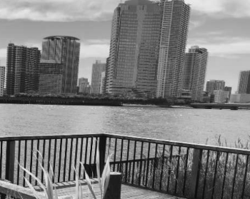
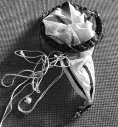
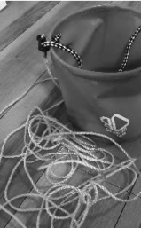
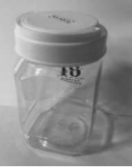
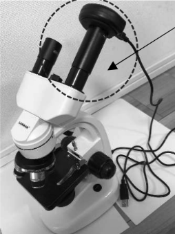
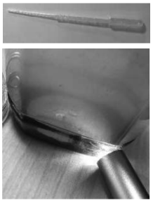

プランクトン観察の
手引き
高校一年 杉崎 直規
1.プランクトンの魅力
プランクトンは世界に数万種以上いると言われています。水中を浮遊する生物とされ、クラゲ、貝やエビなどの幼生、魚の稚魚の一部も含まれます。それぞれ個性的な特徴があり、プランクトンの採集、観察は飽きることがありません。
2.プランクトン採集に行こう
採集はプランクトンネットを使いますが洗濯機のゴミ取りネットなど網目が細かいもので自作もできます。プランクトンネットを川や海に投げ 10 分ほど漂わせ回収します。流れのある場所が、網目にプラクトンが溜るため効率的に採集できます。
採集に必要なものは、1プランクトンネット、2ボトル、3バケツ(あれば尚可)です。採集した水をボトルに移す際にバケツがあると便利です。

今回の採集場所

プランクトンネット

バケツ

ボトル
3.プランクトンを観察しよう
観察に必要なものは1顕微鏡・プレパラート・スライドグラス、2スポイト、3ペンライト、4顕微鏡カメラ(あれば尚可)です。動物プランクトンは、ペンライトを当てると集まってくるためスポイトで取り観察します。藻は、藻に着生するプランクトンも観察できます。顕微鏡カメラがあるとよりスムーズに観察できます。静止画以外に、動画も撮れるため動物プランクトンが動いている様子やツリガネムシの収縮の様子なども録画でき、後からプランクトンを同定する時にも役立ちます。

顕微鏡カメラ
(パソコンに接続して使用する)

ロングスポイトがあると便利
ライトに動物プランクトンが集まってくる様子。肉眼でも観察できる。
プランクトンの寿命は採集してから1週間程度なので、採集したら早めに観察すること。
4.おわりに
個性的なプランクトンを、皆さんもぜひ探してみてください。湾岸エリアで簡単に採取できる海水の動物プランクトンは、ゴカイや貝の幼生の可愛い姿が見られるので、お薦めです。参考文献(1)は海水プランクトンの同定に、参考文献(2)は
淡水プランクトンや植物プランクトンの同定に役立ちました。
参考文献
(1)「日本の海産プランクトン図鑑 第 2 版」末友靖隆 他(共立出版) 2,750 円
(2)「びわ湖のプランクトン フォト&ムービー」石上三雄 他(文理閣) 2,750円